Tintes para autos
El servicio de todos los días, hecho bien: instalación limpia, sin burbujas y con acabado profesional.
Yauco - Tintes industriales
Autos, botes, residencial y comercial. Instalación en taller, con el acabado parejo y la experiencia de años instalando tintes en Yauco.
(787) 598-0221 - Yauco

Lo que hacemos
Del auto diario al equipo pesado: si tiene cristal, lo trabajamos. Fotos reales del taller en Yauco.
El servicio de todos los días, hecho bien: instalación limpia, sin burbujas y con acabado profesional.
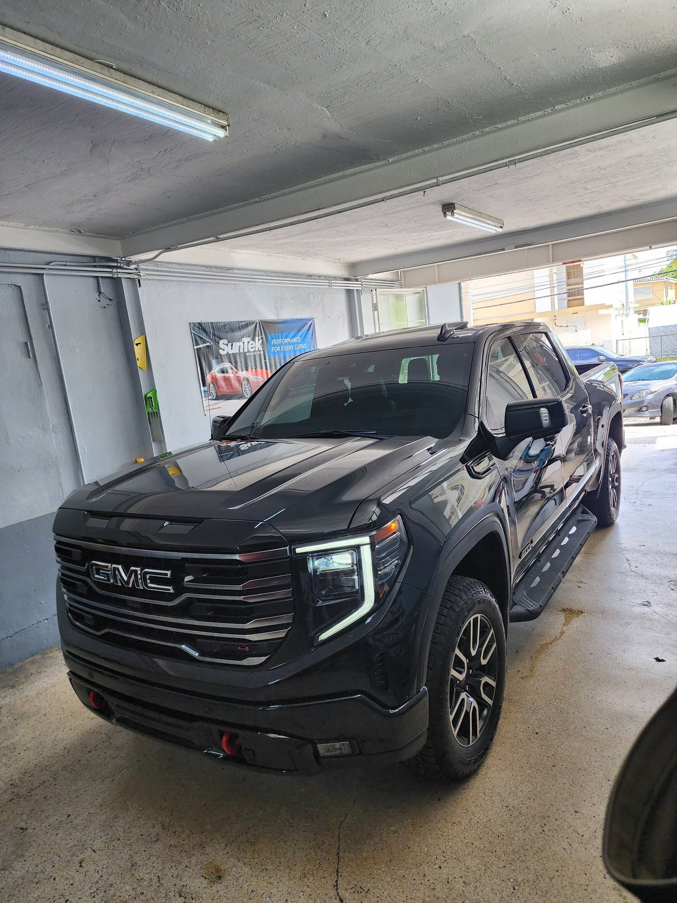
Vehículos grandes, mismo estándar: cobertura completa y terminación pareja en cada cristal.
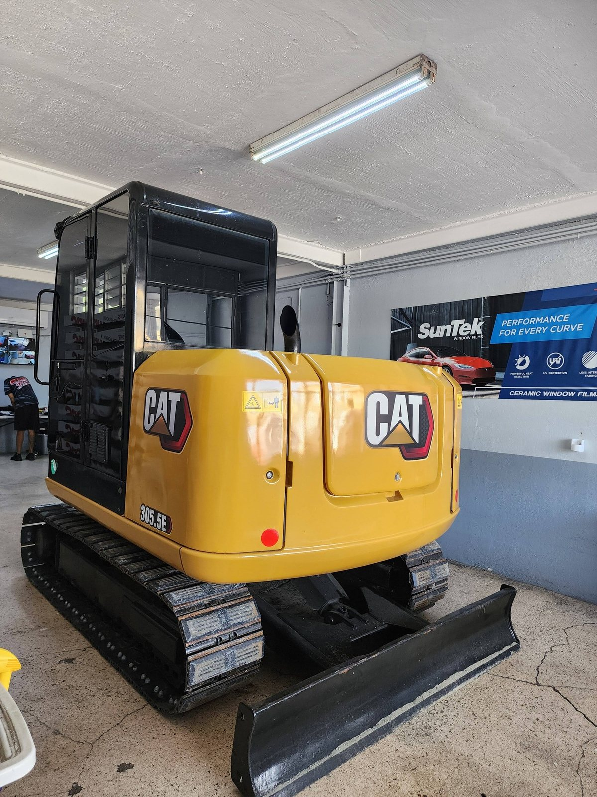
También trabajamos equipo industrial y pesado. Si tu máquina pasa el día bajo el sol, aquí se protege.
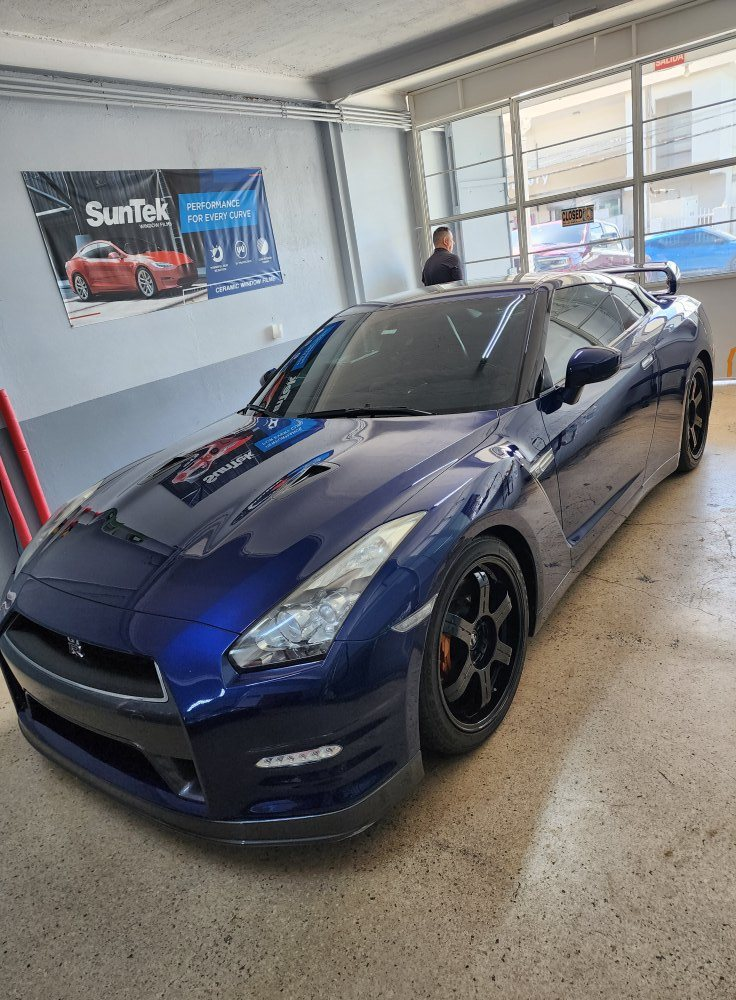
Deportivos y autos de exhibición con el cuidado extra que esos vehículos exigen.
Trabajos reales
Fotos reales de Gilbert Window Tints en Yauco. Sin stock, sin inventos.


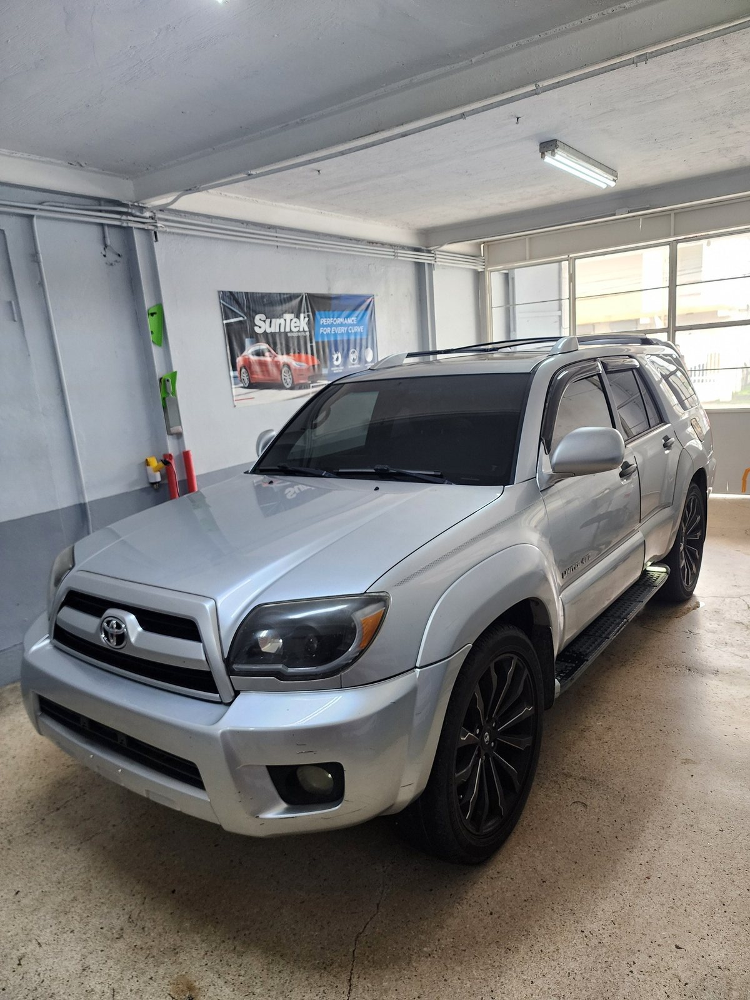
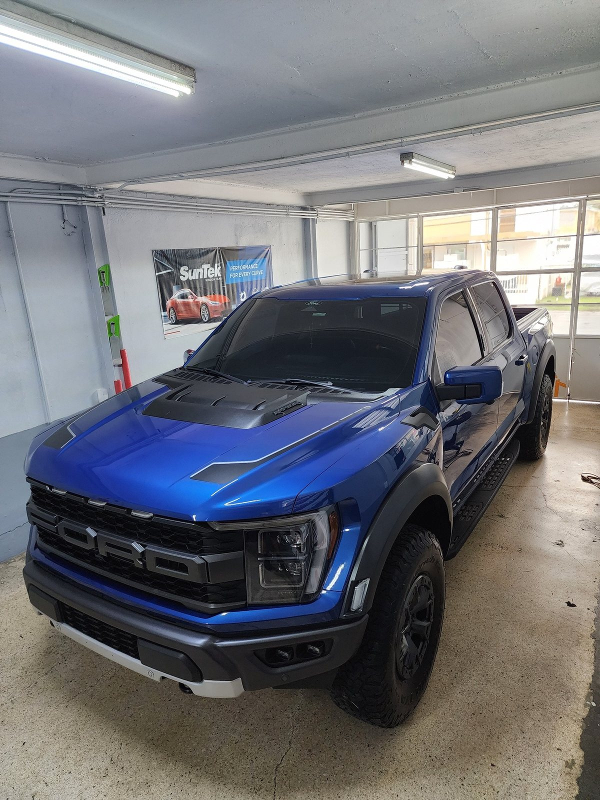
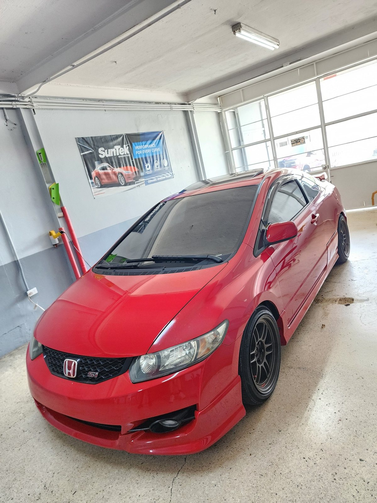

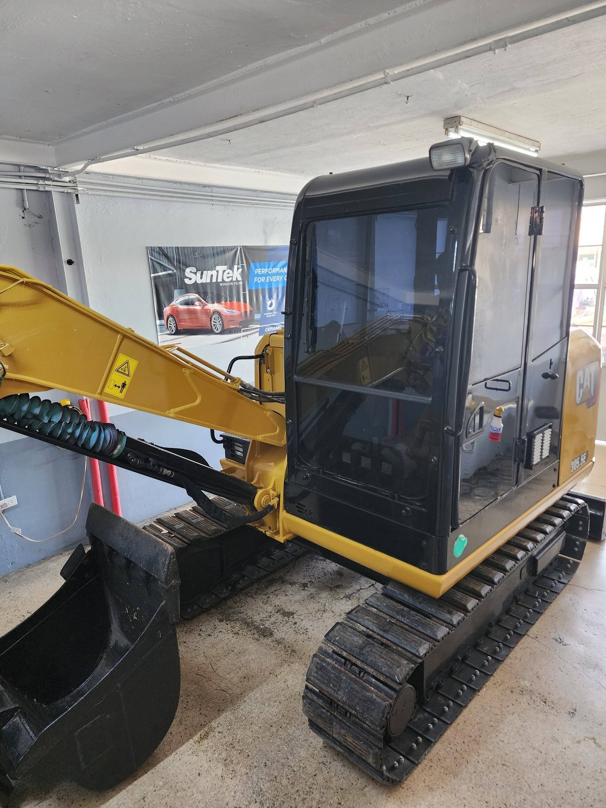
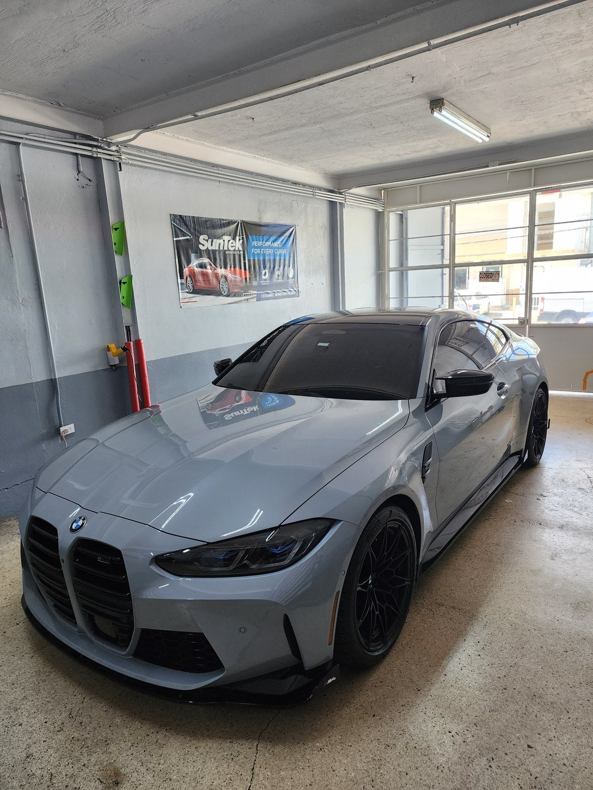
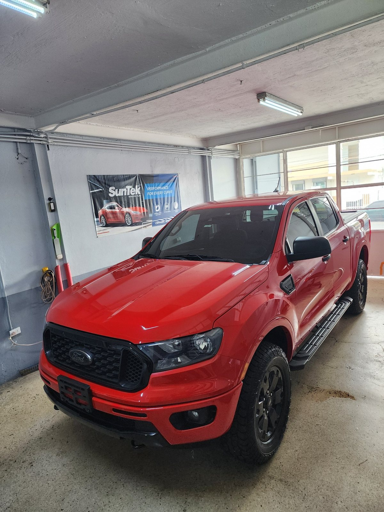
Facil asi
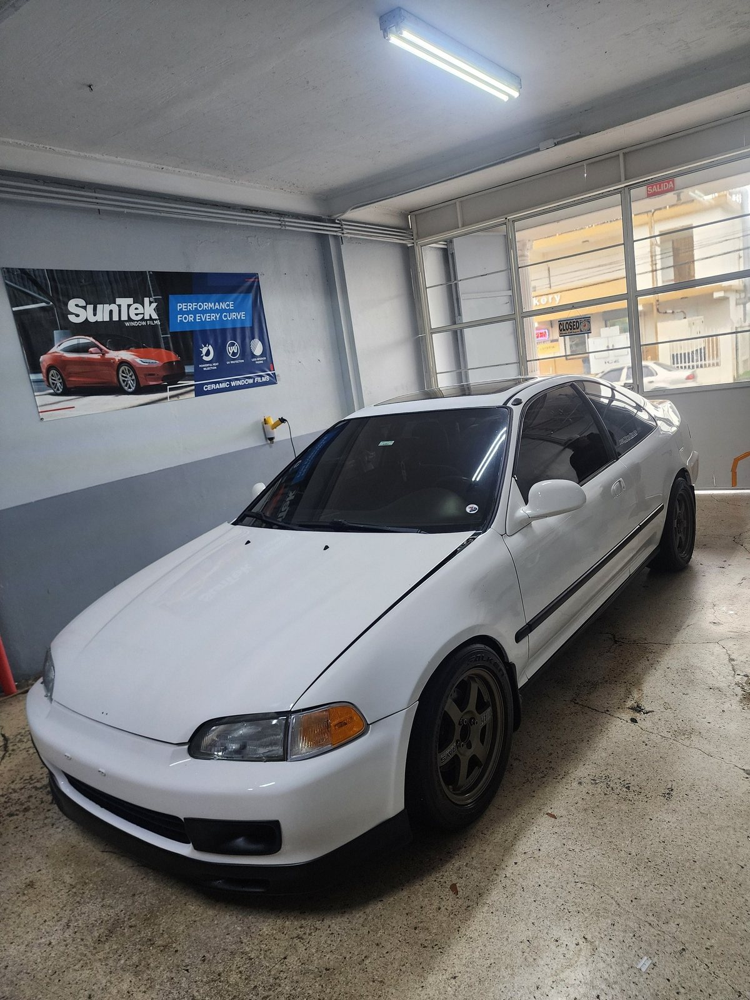
Cuéntanos tu vehículo y lo que buscas. Te orientamos sobre el tinte correcto para tu uso.
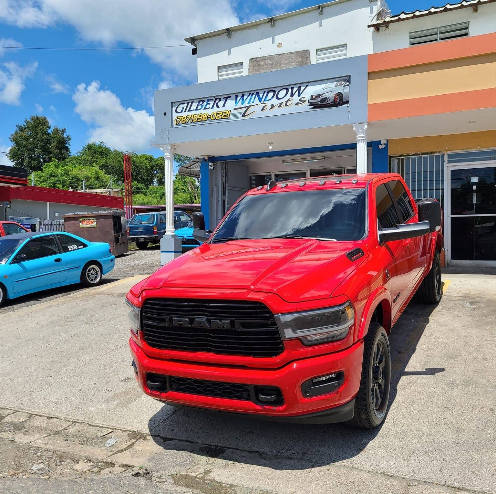
Estamos en PR-376, Barriada Lluberas, Yauco, frente a la panadería. Llegas, lo dejamos en turno y lo trabajamos en el taller.
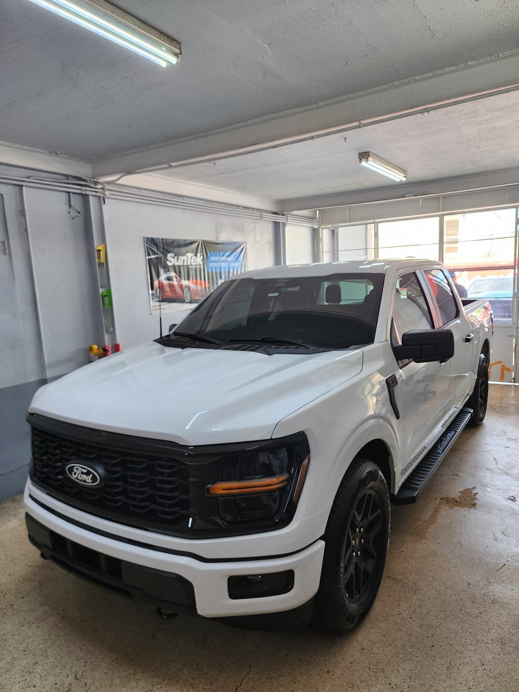
El tinte se instala cristal por cristal, con el cuidado que evita burbujas y bordes levantados.
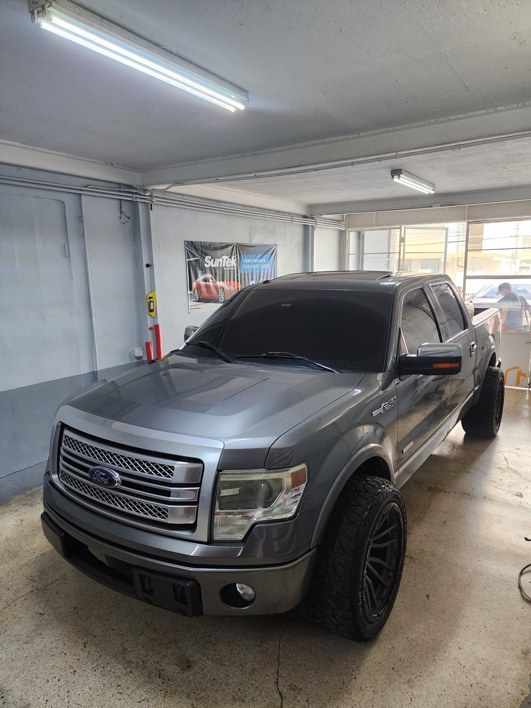
Lo revisamos contigo antes de entregarlo. Sales con el trabajo terminado y el vehículo listo.
Gilbert Window Tints - Yauco
Autos, botes, residencial y comercial: el taller de Gilbert en Yauco lleva años instalando tintes industriales con una reputación que se ve en cada foto. Más de 4,000 seguidores en Facebook siguen ese trabajo día a día.
Si buscas tintes instalados en serio, pasa por el local o escríbenos.
Dudas comunes
Sí. Además de autos, el taller trabaja tintes para botes, residencial y comercial.
En PR-376 Ste 101, Barriada Lluberas, Yauco, frente a la panadería.
Sí. Las fotos del taller muestran equipo industrial con tintes instalados, además de autos y pickups.
Por WhatsApp o por teléfono al (787) 598-0221. Cuéntanos tu vehículo y coordinamos.
Escríbenos ahora y coordina tu instalación en Gilbert Window Tints, Yauco.
PR-376 Ste 101, Barriada Lluberas, Yauco